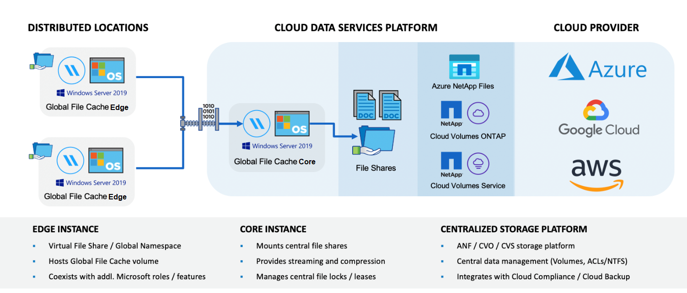
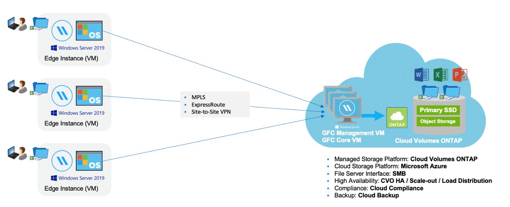

请求文档变更
请求文档变更 在 GitHub 上编辑
在 GitHub 上编辑 提供者指南
提供者指南了解全局文件缓存
借助 NetApp 全局文件缓存，您可以将分布式文件服务器孤岛整合到公有云中一个统一的全局存储占用空间中。这样就可以在云中创建一个可全局访问的文件系统，所有远程位置都可以像在本地一样使用该系统。
概述
实施全局文件缓存会产生一个集中的存储占用空间，而分布式存储架构则需要在每个位置进行本地数据管理，备份，安全管理，存储和基础架构占用空间。

功能
全局文件缓存可启用以下功能：
-
将数据整合并集中到公有云中，并利用企业级存储解决方案的可扩展性和性能
-
为全球用户创建一组数据，并利用智能文件缓存来改善全局数据访问，协作和性能
-
依靠可自我维持的自我管理缓存，并消除完整的数据副本和备份。利用本地文件缓存处理活动数据并降低存储成本
-
通过全局命名空间从分支位置进行透明访问，并实时锁定中央文件
查看有关全局文件缓存功能和用例的更多信息 "此处"。
全局文件缓存组件
全局文件缓存包含以下组件：
-
全局文件缓存管理服务器
-
全局文件缓存核心
-
全局文件缓存边缘（部署在远程位置）
全局文件缓存核心实例挂载到您选择的后端存储平台（例如 Cloud Volumes ONTAP ， Cloud Volumes Service ， 和 Azure NetApp Files ），并创建全局文件缓存网络结构，使其能够将非结构化数据集中并整合到一组数据中，而无论这些数据位于公有云中的一个或多个存储平台上。

支持的存储平台
根据您选择的部署选项，支持的全局文件缓存存储平台会有所不同。
自动化部署选项
使用 Cloud Manager 部署时，以下类型的工作环境支持全局文件缓存：
-
Azure 中的 Cloud Volumes ONTAP
-
AWS 中的 Cloud Volumes ONTAP
通过此配置，您可以在 Cloud Manager 中部署和管理整个全局文件缓存服务器端部署，包括全局文件缓存管理服务器和全局文件缓存核心。
手动部署选项
在公有云存储基础架构上安装的 Cloud Volumes ONTAP ， Cloud Volumes Service ， Azure NetApp Files 和 Amazon FSx for ONTAP 系统也支持全局文件缓存配置。此外， NetApp AFF 和 FAS 平台还提供内部解决方案。在这些安装中，必须手动配置和部署全局文件缓存服务器端组件，而不是使用 Cloud Manager 。
请参见 "《 NetApp 全局文件缓存用户指南》" 了解详细信息。
全局文件缓存的工作原理
全局文件缓存可创建一个软件网络结构，用于在全球远程办公室缓存活动数据集。因此，企业用户可以获得透明的数据访问保障，并在全球范围内获得最佳性能。

本示例中引用的拓扑是一种中心和轮辐模型，远程办公室 / 位置的网络正在访问云中的一组通用数据。此示例的要点如下：
-
集中式数据存储：
-
企业级公有云存储平台，例如 Cloud Volumes ONTAP
-
-
全局文件缓存网络结构：
-
将中央数据存储扩展到远程位置
-
全局文件缓存核心实例，挂载到公司文件共享（ SMB ）。
-
在每个远程位置运行的全局文件缓存边缘实例。
-
在每个远程位置提供一个虚拟文件共享，用于访问中央数据。
-
在自定义大小的 NTFS 卷（
D ： \）上托管智能文件缓存。
-
-
网络配置：
-
多协议标签交换（ MPLS ）， ExpressRoute 或 VPN 连接
-
-
与客户的 Active Directory 域服务集成。
-
用于使用全局命名空间的 DFS 命名空间（建议）。
成本
使用全局文件缓存的成本取决于您选择的安装类型。
-
所有安装都要求您在云（ Cloud Volumes ONTAP ， Cloud Volumes Service 或 Azure NetApp Files ）中部署一个或多个卷。这会导致从选定云提供商处收取费用。
-
所有安装还要求您在云中部署两个或更多虚拟机（ VM ）。这会导致从选定云提供商处收取费用。
-
全局文件缓存管理服务器：
在 Azure 中，此操作在具有 127 GB 高级 SSD 的 D2S_V3 或等效虚拟机（ 2 个 vCPU/8 GB RAM ）上运行
在 AWS 中，此操作在具有 127 GB 通用 SSD 的 m4.large 或等效（ 2 个 vCPU/8 GB RAM ）实例上运行
-
全局文件缓存核心：
在 Azure 中，此操作在具有 127 GB 高级 SSD 的 D4s_V3 或等效虚拟机（ 4 个 vCPU/16 GB RAM ）上运行
在 AWS 中，此操作在具有 127 GB 通用 SSD 的 m4.xlarge 或等效（ 4 个 vCPU/16 GB RAM ）实例上运行
-
-
如果在 Azure 或 AWS 中安装了 Cloud Volumes ONTAP （完全通过 Cloud Manager 部署受支持的配置），则每个站点每年需要支付 3 ， 000 美元的费用（对于每个全局文件缓存边缘实例）。
-
如果使用手动部署选项安装，则定价会有所不同。要查看成本概要，请参见 "计算您的节省潜力" 或者，请咨询全球文件缓存解决方案工程师，以讨论适用于您的企业部署的最佳方案。
许可
全局文件缓存包括一个基于软件的许可证管理服务器（ LMS ），通过该服务器，您可以使用自动化机制整合许可证管理并将许可证部署到所有核心和边缘实例。
在数据中心或云中部署第一个核心实例时，您可以选择将该实例指定为组织的 LMS 。此 LMS 实例配置一次，通过 HTTPS 连接到订阅服务，并使用我们的支持 / 运营部门在订阅启用后提供的客户 ID 验证您的订阅。指定此名称后，您可以通过提供您的客户 ID 和 LMS 实例的 IP 地址来将您的 Edge 实例与 LMS 相关联。
当您购买其他 Edge 许可证或续订订订阅时，我们的支持 / 运营部门会更新许可证详细信息，例如站点数量或订阅结束日期。在 LMS 查询订阅服务后，许可证详细信息将自动在 LMS 实例上更新，并将应用于您的 GFC 核心和边缘实例。
请参见 "《 NetApp 全局文件缓存用户指南》" 有关许可的其他详细信息。
限制
Cloud Manager 中支持的全局文件缓存版本要求用作中央存储的后端存储平台必须是一个工作环境，在此环境中，您已在 Azure 或 AWS 中部署了 Cloud Volumes ONTAP 单节点或 HA 对。
目前，使用 Cloud Manager 不支持其他存储平台和其他云提供商，但可以使用传统部署过程进行部署。
这些其他配置，例如在 Microsoft Azure ， Google Cloud 或 AWS 上使用 Cloud Volumes ONTAP 或 Cloud Volumes Service 的全局文件缓存，仍可通过原有过程获得支持。请参见 "全局文件缓存概述和入职" 了解详细信息。